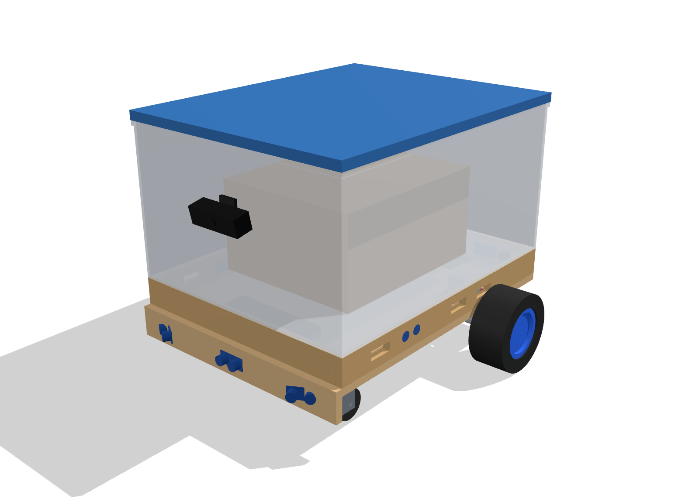
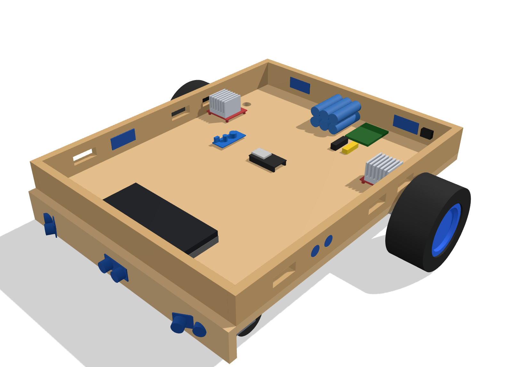

Delivery Rover: Build Pack
5 kg payload · the storage box is the whole body · electronics in a closed compartment underneath · phone inside as the brain · 7 ultrasonic sensors · all sizes in mm · 18 Nov 2026

| Overall |
|---|
| Length × width × height | 549 × 530 × 415 |
| Deck (and box footprint) | 500 × 400, top at 105 |
| Wheelbase (axle to caster swivel) | 305 |
| Track (wheel centres) | 470 |
| Ground clearance (under the motors) | 53.5 |
| Cargo space inside the box | about 495 × 395 × 245 (48 L) |
| Electronics compartment | 476 × 376 × 45 high |
| Performance (from the model) |
|---|
| Rover mass / with 5 kg package | 6.14 kg / 11.14 kg |
| Speed (60 RPM, Ø130 wheels) | 0.408 m/s |
| Weight on the drive wheels | 61 % |
| Torque needed per motor (8% ramp + accel.) | 5.08 kg·cm |
| Static tip angle: forward / back / side | 43° / 31° / 45° |
| Turning on the spot: swept circle | Ø955 |
| Camera height / sees ground from | 304 / 407 ahead |


Left: box removed, showing the electronics compartment. Right: rear, with the main switch and the two rear sensors in the rear wall.
Side and front views


Top view and electronics compartment


Underside and ultrasonic coverage


7 sensors with about 30° beams cover the front (a continuous 90° fan), both sides and the rear. The four corner diagonals are blind at a distance; the rover turns slowly, and the front camera also watches ahead. Closing the corners fully would need about 4 more sensors and an analogue multiplexer, because the ESP32 runs out of pins.
Plywood cut plan and hole list

Hole list (mm from the rear edge / left edge, seen from above)
| # | Hole | Size | Rear | Left |
|---|
| 1 | Wire hole (motor + encoder cables) | Ø16 | 100 | 40 |
| 2 | Wire hole (motor + encoder cables) | Ø16 | 100 | 360 |
| 3 | Wall screw, 4 × 40 wood screw from below | Ø4.5, countersunk | 50 | 6 |
| 4 | Wall screw, 4 × 40 wood screw from below | Ø4.5, countersunk | 50 | 394 |
| 5 | Wall screw, 4 × 40 wood screw from below | Ø4.5, countersunk | 190 | 6 |
| 6 | Wall screw, 4 × 40 wood screw from below | Ø4.5, countersunk | 190 | 394 |
| 7 | Wall screw, 4 × 40 wood screw from below | Ø4.5, countersunk | 330 | 6 |
| 8 | Wall screw, 4 × 40 wood screw from below | Ø4.5, countersunk | 330 | 394 |
| 9 | Wall screw, 4 × 40 wood screw from below | Ø4.5, countersunk | 470 | 6 |
| 10 | Wall screw, 4 × 40 wood screw from below | Ø4.5, countersunk | 470 | 394 |
| 11 | Wall screw, 4 × 40 wood screw from below | Ø4.5, countersunk | 6 | 320 |
| 12 | Wall screw, 4 × 40 wood screw from below | Ø4.5, countersunk | 6 | 200 |
| 13 | Wall screw, 4 × 40 wood screw from below | Ø4.5, countersunk | 6 | 80 |
| 14 | Wall screw, 4 × 40 wood screw from below | Ø4.5, countersunk | 494 | 320 |
| 15 | Wall screw, 4 × 40 wood screw from below | Ø4.5, countersunk | 494 | 200 |
| 16 | Wall screw, 4 × 40 wood screw from below | Ø4.5, countersunk | 494 | 80 |
Bracket and caster holes: hold the part in place and mark through it, because hole spacing varies by seller.
Deck drilling template

Numbers match the hole list on the previous page. Seen from above, front to the right.
Bill of materials ≈ Rs 37,883
daraz.lk: Rs 9,818 (log in and add to cart)
| # | Part | Qty | Each | Total | Link |
|---|
| 1 | JGB37-520 12 V 60 RPM geared motor with Hall encoder. Options: Without Stand / 60RPM / 12V | 2 | 4,909 | 9,818 | daraz.lk |
alphatronic.lk: Rs 6,720 (in cart)
duino.lk: Rs 12,865 (in cart)
| # | Part | Qty | Each | Total | Link |
|---|
| 7 | 130 mm truck wheel, 60 mm wide, 6 mm coupling (blue) | 2 | 1,890 | 3,780 | duino.lk |
| 8 | GA/GB 37 mm geared motor mounting bracket | 2 | 580 | 1,160 | duino.lk |
| 9 | 18650 3.7 V 3200 mAh cell | 6 | 680 | 4,080 | duino.lk |
| 10 | 3S 25 A BMS 12.6 V with balance | 1 | 470 | 470 | duino.lk |
| 11 | 12.6 V 2 A charger | 1 | 1,190 | 1,190 | duino.lk |
| 12 | HC-SR04 ultrasonic sensor (3 front, 2 rear, 2 sides) +4 | 7 | 275 | 1,925 | duino.lk |
| 13 | KCD1 10 A rocker switch (main power and kill switch) | 1 | 90 | 90 | duino.lk |
| 14 | 5 × 20 mm fuse holder | 1 | 60 | 60 | duino.lk |
| 15 | XT60 male and female pair (battery plug) | 1 | 110 | 110 | duino.lk |
ESP32: using your own. duino has the ESP32 CP2102 Type-C 30-pin for Rs 1,570 if needed.
Hardware shop (estimates): about Rs 7,150
| # | Item | Qty | About |
|---|
| 16 | Plastic storage box with lid, about 48 L, footprint 500 × 400 (or smaller), about 250 high body | 1 | 3,000 |
| 17 | 12 mm plywood, 2 ft × 2 ft (610 × 610): deck, 4 walls, sonar strip, risers | 1 | 1,000 |
| 18 | 2" (50 mm) swivel caster, rated 10 kg or more, about 70 mm high | 2 | 900 |
| 19 | Screws, bolts, nuts and washers (see the fastener list) | set | 900 |
| 20 | 18 AWG red/black wire 2 m each, 26 AWG hook-up wire, Dupont jumpers, heat shrink | set | 700 |
| 21 | Resistors 1 kΩ and 2 kΩ, 7 of each (5 V to 3.3 V echo dividers), small perfboard | set | 100 |
| 22 | Spot-weld the 6 cells into a 3S2P pack (battery or phone-repair shop) | 1 | 500 |
| 23 | 10 A glass fuses, 5 × 20 mm | 2 | 50 |
| daraz.lk | 9,818 |
| alphatronic.lk | 6,720 |
| duino.lk | 12,865 |
| Hardware shop (estimate) | 7,150 |
| Delivery (duino 480, alphatronic about 500, Daraz about 350) | about 1,330 |
| Total (using your own phone and ESP32) | ≈ Rs 37,883 |
About Rs 2,883 over the Rs 35,000 budget. Two changes push the total over: the full-body box (about Rs 3,000 instead of Rs 1,500 for the 20 L box) and 4 more HC-SR04 (Rs 1,100). The hardware-shop prices are estimates; a cheaper box is the biggest saving.
Fasteners, consumables and tools
| Where | What | Qty | Note |
|---|
| Motor to bracket | M3 × 6 machine screw | 8 | 4 per motor, into the gearbox face |
| Bracket to deck underside | M4 × 20 bolt + nut + washer (or 4 × 20 wood screw) | 8 | mark through the bracket holes |
| Caster + riser to deck | M4 × 50 bolt + nyloc nut + 2 washers | 8 | through caster plate, 2 riser layers and deck |
| Walls to deck | 4 × 40 countersunk wood screw | 14 | up through the deck (holes 3–16 on the template) |
| Wall corners | 4 × 30 wood screw + PVA glue | 8 | 2 per corner |
| Box floor to wall tops | 4 × 30 wood screw + 25 mm washer | 6 | from inside the box, down into the wall tops |
| Sonar strip to deck front edge | 4 × 30 wood screw | 3 | |
| BTS7960, XL4015 to deck | M3 × 10 screw + 5 mm nylon spacer | 12 | or 3 × 12 wood screws |
| ESP32 and BMS | double-sided foam tape | — | |
| HC-SR04 (7) | hot glue or 2 × M2 screws each | — | wall sensors: board inside, cans through Ø16.5 holes |
| Servo latch | 2 × M2 × 10 + nuts | 2 | rear wall of the box, under the lid lip |
| Webcam bracket | M3 × 10 + nut, 2 washers | 2 | front face of the box |
| Battery pack | Velcro strap or 2 cable ties | 1 | |
| Wiring | cable ties 100 mm, adhesive tie bases | 20 | |
Tools
- Drill with 3, 4.5, 8 mm bits; 16 mm spade bit or hole saw
- Jigsaw or hand saw; sandpaper
- Screwdrivers, 7 mm and 8 mm spanners
- Soldering iron, solder, flux; hot-glue gun
- Multimeter (set the XL4015 to 5.1 V before connecting anything)
- Wire stripper; heat gun or lighter for heat shrink
Component sizes used in the model
| Part | Size (mm) | Source |
|---|
| Deck (plywood) | 500 × 400 × 12 | cut list |
| Electronics walls | 500 × 45 × 12 (2), 376 × 45 × 12 (2) | cut list |
| Cargo box (body) | 500 × 400 × 250, lid 506 × 406 × 15 | pick a box this size or smaller |
| Wheel | Ø130 × 60, 6 mm hub | listing |
| JGB37-520 motor | gearbox Ø37 × 26.5, can Ø35.5 × 30.5, encoder Ø34 × 17; shaft Ø6 D, 7 mm off centre | datasheet, check yours |
| 37 mm bracket | plate 44 × 46, flange 44 × 30, 2.5 thick (modelled) | measure yours |
| 2" caster | 70 high, plate 50 × 50, wheel Ø50 × 18, 20 mm trail | measure: riser = 93 − caster height |
| Riser block | 60 × 60 × 23 (2 × 12 mm plywood, sanded) | cut list |
| 3S2P pack | 65 × 56 × 37 (6 × 18650 Ø18.4 × 65) | calculated |
| BMS 3S 25 A | 60 × 45 × 4 | typical |
| BTS7960 module | 50 × 50, about 37 high with heatsink | typical |
| XL4015 module | 54 × 23 × 15 | typical |
| ESP32 DevKit 30-pin | 52 × 28 × 13 | typical |
| HC-SR04 | 45 × 20 board, Ø16 × 12 cans, 26 mm apart | datasheet |
| MG90S servo | 22.8 × 12.2 × 28.5 | datasheet |
| Webcam HD-U01 | about 90 × 28 × 28 | estimate, measure yours |
| Phone (Redmi K50 Pro) | 163.1 × 76.2 × 8.5 | maker's spec |
Wiring and ESP32 pin map
3S2P pack ─ XT60 ─ fuse 10 A ─ rocker switch (rear wall, kill switch) ─┬─ BTS7960 #1 B+/B− ─ left motor M+/M−
├─ BTS7960 #2 B+/B− ─ right motor M+/M−
└─ XL4015 (set 5.1 V) ─ 5 V rail
5 V rail: ESP32 VIN, BTS7960 VCC + R_EN + L_EN, 7 × HC-SR04 VCC, servo
3.3 V (ESP32 pin): both encoder boards
Phone (front of the compartment): USB-C OTG ─ webcam on the box front; Wi-Fi ─ ESP32
All grounds joined at one point near the XL4015.
| Signal | ESP32 pin | Note |
|---|
| BTS7960 #1 (left) RPWM / LPWM | GPIO 25 / 26 | R_EN + L_EN tied to 5 V (always on) |
| BTS7960 #2 (right) RPWM / LPWM | GPIO 32 / 33 | R_EN + L_EN tied to 5 V |
| Left encoder A / B | GPIO 18 / 19 | PCNT; encoder powered from 3.3 V |
| Right encoder A / B | GPIO 21 / 22 | PCNT |
| Sonar trigger group 1: front-centre + rear-left | GPIO 4 | groups never face the same way |
| Sonar trigger group 2: front-left + side-right + rear-right | GPIO 16 | fire groups one after another |
| Sonar trigger group 3: front-right + side-left | GPIO 17 | full scan about 75 ms (13 Hz) |
| Echo F-L / F-C / F-R | GPIO 34 / 35 / 36 | each through 1 kΩ (series) + 2 kΩ (to GND) |
| Echo S-L / S-R | GPIO 39 / 27 | divider as above |
| Echo B-L / B-R | GPIO 14 / 23 | divider as above |
| Servo signal | GPIO 13 | servo powered from 5 V |
| Status LED | GPIO 2 | on-board LED |
| Spare | GPIO 5, 15 | |
5 V power budget: ESP32 about 250 mA, 7 sensors about 105 mA, servo up to 700 mA when moving. The XL4015 gives 5 A, so there is plenty of headroom.
Assembly order
- Cut the plywood (cut plan). Glue and screw the four walls into a frame, then screw the frame to the deck from below (14 countersunk screws).
- Drill the deck: two Ø16 wire holes, the wall-screw holes, then the bracket and caster holes by marking through the parts. Cut the 40 × 15 vent slots and the Ø16.5 sensor holes in the walls, and the 19 × 13 switch hole in the rear wall (thin the wall to about 2 mm around it from inside so the clips grip).
- Fit the motors to the brackets (shaft at the bottom, 7 mm below the gearbox centre), bolt the brackets under the deck with the axle 140 mm from the rear edge, and push the wheels on and tighten their grub screws.
- Stack two 60 × 60 risers under each caster and bolt them through the deck, 445 mm from the rear edge and 60 mm in from each side. Check the deck sits level; sand the risers if not.
- Have the cells spot-welded as 3S2P, solder the BMS balance leads, and fit the XT60. Charge it once with the 12.6 V charger.
- Set the XL4015 to 5.1 V with the multimeter before connecting anything to it.
- Mount the boards (layout drawing). Wire the power path: battery, XT60, fuse, rocker switch, then the BTS7960s and the XL4015. Join all grounds at one point.
- Build the 7 echo dividers on perfboard, wire the sensors and the encoders to the ESP32 (pin map), and route the motor and encoder cables up through the Ø16 holes.
- Screw the sonar strip to the front edge; glue the front-left and front-right sensors on 30° wedges. Fit the wall sensors from inside.
- Put the phone on the foam pad (screen up, at the front), plug in the OTG cable and lead it up to the webcam through a small grommet in the box floor.
- Screw the box floor down onto the wall tops, mount the webcam (about 300 mm up, tilted 12° down) and the servo latch, and calibrate the phone compass with everything powered.
Weight and balance
| Part (≥ 50 g) | kg |
|---|
| Payload 5kg example 300x250x150 | 5.000 |
| Deck plywood 500x400x12 | 1.440 |
| Cargo box 48L 500x400x250 | 1.200 |
| Cargo box lid | 0.400 |
| Wires, bolts, screws, cable ties | 0.350 |
| Battery 3S2P 18650 pack | 0.300 |
| Phone Redmi K50 Pro 163x76x8.5 | 0.230 |
| Wall side L 500x45x12 | 0.150 |
| Wall side R 500x45x12 | 0.150 |
| Sonar strip plywood 400x50x12 | 0.140 |
| Wheel tyre 130x60 L | 0.120 |
| Wheel tyre 130x60 R | 0.120 |
| Wall front 376x45x12 | 0.110 |
| Wall rear 376x45x12 | 0.110 |
| Motor gearbox JGB37 L | 0.090 |
| Motor gearbox JGB37 R | 0.090 |
| Motor can 520 L | 0.080 |
| Wheel hub 6mm coupling L | 0.080 |
| Motor can 520 R | 0.080 |
| Wheel hub 6mm coupling R | 0.080 |
| Webcam HD-U01 1080p | 0.080 |
| Motor bracket 37mm L | 0.050 |
| Motor bracket 37mm R | 0.050 |
| Caster riser block L | 0.050 |
| Caster riser block R | 0.050 |
| Rover / with package | 6.14 / 11.14 |
| Centre of gravity, loaded (x fwd, y, z) | 2, 0, 185 |
| Weight on the drive wheels | 61 % |
| Grip available (μ 0.7) | about 46 N |
| Force needed, worst case | 15.3 N |
| Torque per motor needed | 5.08 kg·cm |
| Motor rating (60 RPM, continuous) | about 4–5 kg·cm |
At 11.14 kg loaded, an 8% ramp while speeding up needs about 5.08 kg·cm per motor: at the top of the motors' continuous rating. That is fine on flat paving (about 2 kg·cm). On ramps, accelerate gently, or keep the package to 4 kg.
Put heavy packages at the back of the box, over the drive wheels, for grip. The battery is already at the back of the compartment for the same reason.
3D files
| File | Open with |
|---|
| model/delivery_rover.step | Fusion 360, SolidWorks, Onshape, FreeCAD: real solids, every part named |
| model/delivery_rover.FCStd | FreeCAD |
| model/delivery_rover.glb | Blender, Windows 3D Viewer, any glTF viewer: coloured |
| model/delivery_rover.stl | Mesh tools and slicers (single mesh) |
| docs/rover_viewer.html | Any browser: turn, zoom, hide the box/lid/package, click a part for its name |
| src/build_model.py | The model as code: change a size and run it in FreeCAD to rebuild everything |